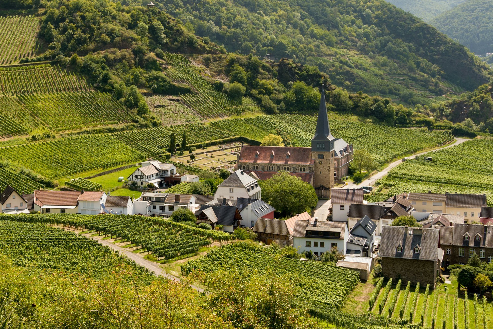
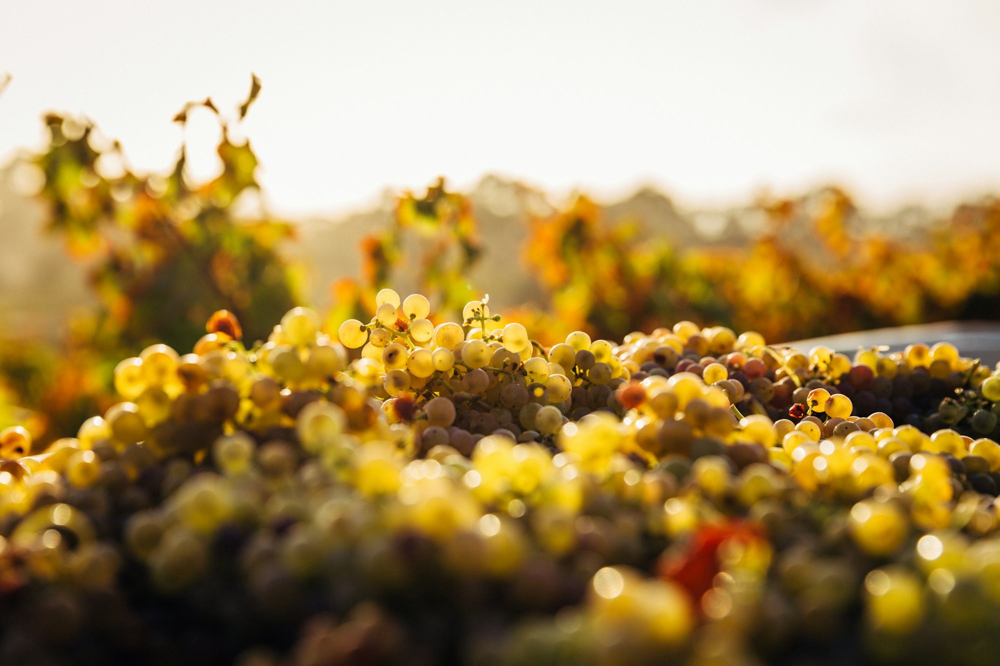
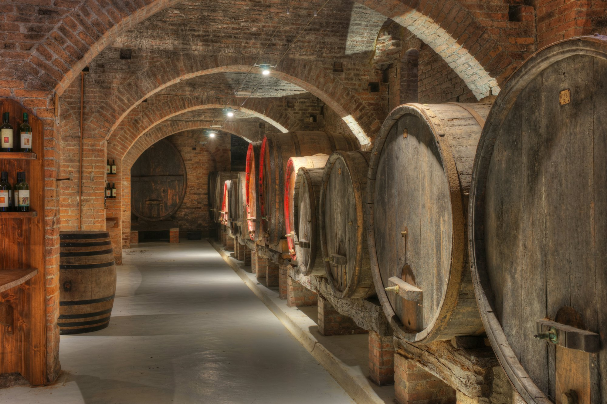
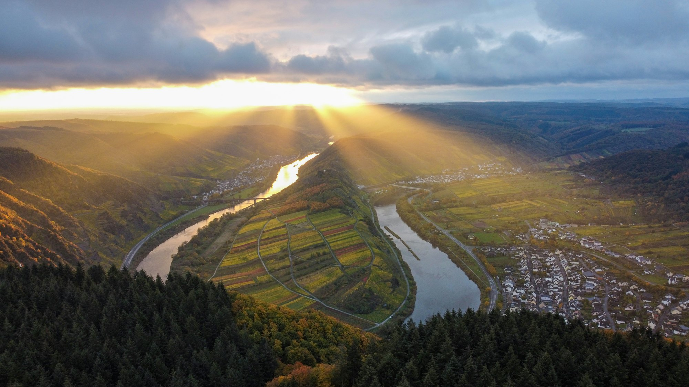

Der Berg fällt so steil zum Fluss, dass jede Traube auf dem Rücken heruntergetragen wird.
Vier Hektar, drei Lagen, eine Familie. Das Gut liegt am Ortsausgang Richtung Fluss, die Reben stehen darüber. Was hier wächst, wächst auf blauem Devonschiefer, in dem kaum Erde steckt. Die Wurzeln müssen tief, sonst finden sie nichts.

Wir lesen spät und in mehreren Durchgängen. Das kostet Nerven und lohnt sich.
Drei bis vier Mal geht die Mannschaft durch dieselbe Zeile, jedes Mal wird nur genommen, was so weit ist. Der Rest hängt weiter. In manchen Jahren stehen die letzten Trauben noch im Dezember, dann wird es Eiswein oder eben nichts.

Die Weine
Neun Weine, alle aus eigener Lese. Sortiert nach der Lage, aus der sie kommen, denn daran liegt der Unterschied.

Unten wird nichts beschleunigt. Manche Fässer stehen seit vier Generationen.
Spontane Gärung, lange Hefelager, kein Holzgeschmack. Die alten Stückfässer geben keinen Ton an den Wein ab, sie lassen ihn nur atmen. Abgefüllt wird, wenn er so weit ist, nicht wenn der Kalender es sagt.
Weinprobe
Vier bis sechzehn Personen, immer mit jemandem, der die Weine gemacht hat. Deshalb geht es nicht spontan.
Gutsprobe
Sechs Weine · 90 MinutenQuer durch das Sortiment, im Hof oder in der Vinothek.
18 € je Person
Lagenprobe
Acht Weine · zwei StundenDerselbe Riesling aus allen drei Lagen nebeneinander. Danach glaubt man an Herkunft oder eben nicht.
28 € je Person
Steilhang und Keller
Acht Weine · dreieinhalb StundenErst zu Fuß hoch auf die Sonnenlay, dann hinunter in den Gewölbekeller. Feste Schuhe.
42 € je Person
Nehmen Sie im Anschluss mindestens sechs Flaschen mit, rechnen wir den Beitrag auf den Weinkauf an. Anfragen über das Formular weiter unten.

Besuch
Steinhauser Weinstraße 4. Der Hof liegt am Ortsausgang Richtung Fluss, hinter der Kapelle links. Der Weg ist eng, für Busse gibt es einen Wendeplatz am Sportheim, fünf Minuten zu Fuß.
Der Weinbergsweg auf die Sonnenlay ist öffentlich und dauert von unten bis zum Felsband etwa 25 Minuten. Feste Schuhe, kein Spaß bei Nässe.
Vinothek
- Montag, Dienstag
- geschlossen
- Mittwoch bis Freitag
- 14 – 18 Uhr
- Samstag
- 11 – 17 Uhr
- Sonntag
- nach Absprache
In der Lese, meist von Mitte September bis Ende Oktober, ist die Vinothek zu. Dann sind wir im Berg.
Versand
Innerhalb Deutschlands ab sechs Flaschen versandkostenfrei, sonst 7,90 €. Nach Österreich und in die Niederlande ab zwölf Flaschen. Abholung im Hof geht immer, wenn Sie vorher kurz anrufen.
Schreiben Sie uns
Für eine Probe schreiben Sie am besten gleich dazu, wie viele Sie sind und wann Sie ungefähr können. Dann sparen wir uns zwei Mails.